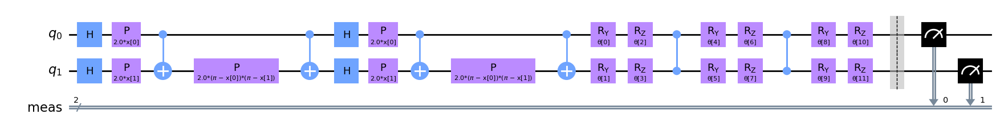

from qiskit.circuit import QuantumCircuit, Parameter
theta = Parameter('angle') # niezdefiniowany parametr
qc = QuantumCircuit(2)
qc.rz(theta, 0)
qc.crz(theta, 0, 1)
qc.draw('mpl')
Parametryzowane algorytmy kwantowe, czyli takie w których realizujemy obwody przez bramki parametryzowane (liczbami) są podstawowym budulcem algorytmów kwantowego uczenia maszynowego. Bardzo często mozna się spotkać z innymi nazwami: parameterized trial states, variational forms, lub ansatzes.
Ponizszy przykład przedstawia obwód z dwoma bramkami parametryzowanymi jedną liczbą \(\theta\). Do oznaczenia parametru wykorzystano obiekt Parameter.
from qiskit.circuit import QuantumCircuit, Parameter
theta = Parameter('angle') # niezdefiniowany parametr
qc = QuantumCircuit(2)
qc.rz(theta, 0)
qc.crz(theta, 0, 1)
qc.draw('mpl')
print(qc.parameters)ParameterView([Parameter(angle)])Jezeli chcemy zastosować wiele parametrów dla róznych bramek mozemy uzyc klasy kilku obiektów na podstawie klasy Parameters lub zastosować klasę ParameterVector.
from qiskit.circuit import ParameterVector
theta_list = ParameterVector('theta', length=2)
qc = QuantumCircuit(2)
qc.rz(theta_list[0], 0)
qc.crz(theta_list[1], 0, 1)
qc.draw('mpl')qc.parametersParameterView([ParameterVectorElement(theta[0]), ParameterVectorElement(theta[1])])Poniewaz wszystkie bramki kwantowe uzywane w obwodach są unitarne, parametryzowany obwód równiez moze być opisany jako unitarna operacja wykonywana na n kubitach \(U_{\theta}\) działająca na pewien stan początkowy \(|\phi_0\rangle\). \[ |\psi_{\theta}\rangle = U_{\theta} |\phi_0\rangle \]
W ogólności realizowane jest to w formie testowej sprwadz publikację.
Przetestujmy dwa parametryczne obwody i zobaczmy jakie mozliwosci kodowania stanów one reprezentują.
Expressibility (zdolność do generowania stanów w przestrzeni Hilberta) oraz entangling capability (mozliwość splątania kubitów) to dwie miary pozwalające porównać rózne PQC.
import numpy as np
import matplotlib.pyplot as plt
# First, we need to define the circuits:
theta_param = Parameter('θ')
phi_param = Parameter('Φ')
# Circuit A
qc_A = QuantumCircuit(1)
qc_A.h(0)
qc_A.rz(theta_param, 0)
display(qc_A.draw('mpl'))
# Circuit B
qc_B = QuantumCircuit(1)
qc_B.h(0)
qc_B.rz(theta_param, 0)
qc_B.rx(phi_param, 0)
display(qc_B.draw('mpl'))# Next we uniformly sample the parameter space for the two parameters theta and phi
np.random.seed(0)
num_param = 1000
theta = [2*np.pi*np.random.uniform() for i in range(num_param)]
phi = [2*np.pi*np.random.uniform() for i in range(num_param)]
# Then we take the parameter value lists, build the state vectors corresponding
# to each circuit, and plot them on the Bloch sphere:
from qiskit.visualization.bloch import Bloch
from qiskit.quantum_info import Statevector
def state_to_bloch(state_vec):
# Converts state vectors to points on the Bloch sphere
phi = np.angle(state_vec.data[1])-np.angle(state_vec.data[0])
theta = 2*np.arccos(np.abs(state_vec.data[0]))
return [np.sin(theta)*np.cos(phi),np.sin(theta)*np.sin(phi),np.cos(theta)]
# Bloch sphere plot formatting
width, height = plt.figaspect(1/2)
fig=plt.figure(figsize=(width, height))
ax1, ax2 = fig.add_subplot(1, 2, 1, projection='3d'), fig.add_subplot(1, 2, 2, projection='3d')
b1,b2 = Bloch(axes=ax1), Bloch(axes=ax2)
b1.point_color, b2.point_color = ['tab:blue'],['tab:blue']
b1.point_marker, b2.point_marker= ['o'],['o']
b1.point_size, b2.point_size=[2],[2]
# Calculate state vectors for circuit A and circuit B for each set of sampled parameters
# and add to their respective Bloch sphere
for i in range(num_param):
state_1=Statevector.from_instruction(qc_A.bind_parameters({theta_param:theta[i]}))
state_2=Statevector.from_instruction(qc_B.bind_parameters({theta_param:theta[i], phi_param:phi[i]}))
b1.add_points(state_to_bloch(state_1))
b2.add_points(state_to_bloch(state_2))
b1.show()
b2.show()Biorąc pod uwagę otrzymane wyniki widać, ze pierwszy obwód ma małe expressibility natomiast drugi duze (w drugim przypadku jednak rozkład nie jest jednorodny).
Drugą, wazną cechą obwodów jest mozliwosc wykorzystania splątania. Aby zmierzyć jak bardzo stany są splątane mozemy uzyć miary Meyer’a-Wallach’a. Dla stanów separowalnych miara ta przyjmuje wartość \(0\), natomiast dla stanów Bella \(1\).
from qiskit import QuantumRegister, QuantumCircuit
q1 = QuantumRegister(4, 'q')
c1 = QuantumCircuit(q1)
c1.rz(0,[0,1,2,3])
c1.rx(0,q1)
c1.draw('mpl')Ten obwód nie ma operacji wprowadzających stan splątany - brak bramek dwukubitowych. Miara M-W = 0.
q2 = QuantumRegister(4, 'q')
c2 = QuantumCircuit(q1)
c2.rz(0,[0,1,2,3])
c2.rx(0,q1)
c2.cx(0,1)
c2.cx(2,3)
c2.cx(1,2)
c2.draw('mpl')W tym przypadku istnieją bramki dwukubitowe wprowadzające stany splątane dlatego miara M-W będzie większa od 0. Więcej info tutaj
W QML parametryzowane obwody są uzywane do dwóch głównych zadań.
Aby zrealizować modele uczenia maszynowego na klasycznych danych z wykorzystaniem PQC musimy wykonać i wybrać kilka operacji pozwalających operować na naszych danych za pomocą obwodów kwantowych.
Zadanie to często nazywane jest reprezentacją danych klasycznych w pewnej przestrzeni Hilberta, a więc moze być nazywane embeddingiem danych. Tak jak ma to miejsce dla danych grafowych czy tez w sytuacjii gdy stosujemy rózne metody zmieniające postać danych np. kernel methods w SVM.
W przypadku obwodów kwantowych ich działanie opiera się na przetworzeniu początkowego stanu kwantowego wyrazanego jako iloczyn tensorowy kubitów. Dlatego naturalnym sposobem jest przedstawienie danych jako wektor w pewnej przestrzeni Hilberta.
Tak przygotowany i sparametryzowany stan mozna wykorzystać np w modelach typu Variational Quantum Circuit, gdzie oprócz stanu budujemy kolejny PQC, tym razem realizujący parametry naszego modelu jako parametry bramek kwantowych. Całość optymalizowana jest za pomocą róznego rodzaju optymalizatorów.
Nasze zadanie sprowadzić mozna do pobrania klasycznego punktu danych \(\vec{x}\) oraz zakodowania go za pomocą bramek (parametryzowanych) w obwodzie kwantowym. \[ x_i \to |\phi(x_i)\rangle \]
QFM (Quantum Feature Map) \(V(\Phi(\vec{x}))\) przetwarza klasyczne dane na dane kwantowe.
\(\Phi(.)\) to klasyczna funkcja zastosowana do klasycznych danych.
\(V\) - to parametryzowany obwód zmieniający dane klasyczne na kwantowe.
Trzy podstawowe czynniki związane z wyborem feature map:
reps)The first order Pauli Z-evolution circuit. Documentacja
\[ \Phi_S \colon x \to x_i \] Otrzymany obwód nie zawiera oddziaływania między zmiennymi (zakodowanych danych), co wiąze się z brakiem wykorzystania efektu splątania.
from qiskit.circuit.library import ZFeatureMap
qc_z = ZFeatureMap(feature_dimension=3, reps=1)
qc_z.draw('mpl')qc_z.decompose().draw('mpl')Second-order Pauli-Z evolution circuit. Documentacja
from qiskit.circuit.library import ZZFeatureMap
qc_zz = ZZFeatureMap(feature_dimension=3, reps=1,
entanglement='full',
insert_barriers=True)
qc_zz.draw('mpl')
qc_zz.decompose().draw('mpl')qc_zz = ZZFeatureMap(feature_dimension=3, reps=1, entanglement='linear',insert_barriers=True)
qc_zz.draw('mpl')qc_zz.decompose().draw('mpl')from qiskit.circuit.library import PauliFeatureMap
qc_p = PauliFeatureMap(feature_dimension=3, reps=1, paulis = ['Z','ZZ','ZY'])
qc_p.draw('mpl')
qc_p.decompose().draw('mpl')Zaobaczmy jakiemu kodowaniu odpowiada PauliFeatureMap dla operatorów Z i ZZ.
qc_p = PauliFeatureMap(feature_dimension=3, reps=1, paulis = ['Z','ZZ'])
display(qc_p.draw('mpl'))
qc_p.decompose().draw('mpl')Jeśli mamy juz określony sposób kodowania danych, komputer kwantowy moze je przeanalizować w odpowiedniej przestrzeni Hilberta i np znaleźć hiperplaszczyzne dla procesu klasyfikacji.
Kolejnym elementem jest obwód realizujący model. Tutaj równiez istnieje wiele mozliwych implementacji. W ogólności tworzymy parametryzowany operator unitarny \(U(w)\) dla którego: \[ |\psi(x:\theta)\rangle = U(w)|\psi(x)\rangle \]
Jednym z przykładowych modeli w bibliotece Qiskit jest obwód realizowany jako RealAmplitudes. Ilośc parametrów modelu moze być ustalana za pomocą głębokości obwodu - czyli ile razy powtórzymy dany schemat.
from qiskit.circuit.library import TwoLocal
qc_twolocal = TwoLocal(num_qubits=3, reps=2, rotation_blocks=['ry','rz'],
entanglement_blocks='cz', skip_final_rotation_layer=True,
insert_barriers=True)
qc_twolocal.decompose().draw('mpl')qc_13 = TwoLocal(3, rotation_blocks='ry',
entanglement_blocks='crz', entanglement='sca',
reps=3, skip_final_rotation_layer=True,
insert_barriers=True)
qc_13.decompose().draw('mpl')from qiskit import QuantumCircuit
from qiskit.circuit import ParameterVector
from qiskit.circuit.library import NLocal
# rotation block:
rot = QuantumCircuit(2)
params = ParameterVector('r', 2)
rot.ry(params[0], 0)
rot.rz(params[1], 1)
# entanglement block:
ent = QuantumCircuit(4)
params = ParameterVector('e', 3)
ent.crx(params[0], 0, 1)
ent.crx(params[1], 1, 2)
ent.crx(params[2], 2, 3)
qc_nlocal = NLocal(num_qubits=6, rotation_blocks=rot,
entanglement_blocks=ent, entanglement='linear',
skip_final_rotation_layer=True, insert_barriers=True)
qc_nlocal.decompose().draw('mpl')Zainstaluj bibliotekę qiskit-algorithms pip install qiskit-algorithms.
from qiskit-algorithms.optimizers import COBYLAfrom qiskit.utils import algorithm_globals
algorithm_globals.random_seed = 42
import numpy as np
np.random.seed(algorithm_globals.random_seed)
# Tworzymy zbiór danych
from qiskit_machine_learning.datasets import ad_hoc_data
TRAIN_DATA, TRAIN_LABELS, TEST_DATA, TEST_LABELS = (
ad_hoc_data(training_size=20,
test_size=5,
n=2,
gap=0.3,
one_hot=False)
)len(TRAIN_DATA), len(TRAIN_LABELS), len(TEST_DATA), len(TEST_LABELS)(40, 40, 10, 10)TRAIN_DATA[0], TRAIN_LABELS[0](array([4.90088454, 4.1469023 ]), 0)Do zakodowania danych w stanie kwantowym uzyjemy: ZZFeatureMap o głębokości 2.
from qiskit.circuit.library import ZZFeatureMap
FEATURE_MAP = ZZFeatureMap(feature_dimension=2, reps=2)Jako model wykorzystamy TwoLocal z bramkami ry rz i cz do splątania.
from qiskit.circuit.library import TwoLocal
VAR_FORM = TwoLocal(2, ['ry', 'rz'], 'cz', reps=2)
AD_HOC_CIRCUIT = FEATURE_MAP.compose(VAR_FORM)
AD_HOC_CIRCUIT.measure_all()
AD_HOC_CIRCUIT.decompose().draw('mpl')
def circuit_instance(data, variational):
"""Assigns parameter values to `AD_HOC_CIRCUIT`.
Args:
data (list): Data values for the feature map
variational (list): Parameter values for `VAR_FORM`
Returns:
QuantumCircuit: `AD_HOC_CIRCUIT` with parameters assigned
"""
parameters = {}
for i, p in enumerate(FEATURE_MAP.ordered_parameters):
parameters[p] = data[i]
for i, p in enumerate(VAR_FORM.ordered_parameters):
parameters[p] = variational[i]
return AD_HOC_CIRCUIT.assign_parameters(parameters)poniewaz wynikami są bitstringi musimy podać ich interpretacje i przeliczać je na klasę rozwiązań. Jednym z przykładowych rozwiązań jest wykorzystanie funkcji parity.
def parity(bitstring):
"""Returns 1 if parity of `bitstring` is even, otherwise 0."""
hamming_weight = sum(int(k) for k in list(bitstring))
return (hamming_weight+1) % 2Pomocniczo zdefiniujemy funkcję obliczającą prawdopodobieństwo (częstotliwość) dla danej klasy wynikowej. Nasz obwód będzie uruchamiany wiele razy, dzięki czemu uzyskamy zliczenia w róznych eksperymentach.
def label_probability(results):
"""Converts a dict of bitstrings and their counts,
to parities and their counts"""
shots = sum(results.values())
probabilities = {0: 0, 1: 0}
for bitstring, counts in results.items():
label = parity(bitstring)
probabilities[label] += counts / shots
return probabilitiesPosiadając powyzsze elementy mozemy zdefiniować funkcję realizującą klasyfikację.
from qiskit import BasicAer, execute
def classification_probability(data, variational):
"""Classify data points using given parameters.
Args:
data (list): Set of data points to classify
variational (list): Parameters for `VAR_FORM`
Returns:
list[dict]: Probability of circuit classifying
each data point as 0 or 1.
"""
circuits = [circuit_instance(d, variational) for d in data]
backend = BasicAer.get_backend('qasm_simulator')
results = execute(circuits, backend).result()
classification = [
label_probability(results.get_counts(c)) for c in circuits]
return classificationPoniewaz będziemy chcieli trenować model będziemy potrzebowali zdefiniować funkcję straty i kosztu
def cross_entropy_loss(classification, expected):
"""Calculate accuracy of predictions using cross entropy loss.
Args:
classification (dict): Dict where keys are possible classes,
and values are the probability our
circuit chooses that class.
expected (int): Correct classification of the data point.
Returns:
float: Cross entropy loss
"""
p = classification.get(expected) # Prob. of correct classification
return -np.log(p + 1e-10)
def cost_function(data, labels, variational):
"""Evaluates performance of our circuit with `variational`
parameters on `data`.
Args:
data (list): List of data points to classify
labels (list): List of correct labels for each data point
variational (list): Parameters to use in circuit
Returns:
float: Cost (metric of performance)
"""
classifications = classification_probability(data, variational)
cost = 0
for i, classification in enumerate(classifications):
cost += cross_entropy_loss(classification, labels[i])
cost /= len(data)
return costMozemy teraz przypisac optymalizator
class OptimizerLog:
"""Log to store optimizer's intermediate results"""
def __init__(self):
self.evaluations = []
self.parameters = []
self.costs = []
def update(self, evaluation, parameter, cost, _stepsize, _accept):
"""Save intermediate results. Optimizer passes five values
but we ignore the last two."""
self.evaluations.append(evaluation)
self.parameters.append(parameter)
self.costs.append(cost)
# Set up the optimization
from qiskit_algorithms.optimizers import SPSA
log = OptimizerLog()
optimizer = SPSA(maxiter=100, callback=log.update)Losujemy parametry początkowe, i wskazujemy optymalizowaną funkcję
initial_point = np.random.random(VAR_FORM.num_parameters)
def objective_function(variational):
"""Cost function of circuit parameters on training data.
The optimizer will attempt to minimize this."""
return cost_function(TRAIN_DATA, TRAIN_LABELS, variational)uruchamiamy całą procedurę
# Run the optimization
result = optimizer.minimize(objective_function, initial_point)
opt_var = result.x
opt_value = result.fun
import matplotlib.pyplot as plt
fig = plt.figure()
plt.plot(log.evaluations, log.costs)
plt.xlabel('Steps')
plt.ylabel('Cost')
plt.show()Dla zbioru testowego mozemy sprawdzic jakosc przewidywań
def test_classifier(data, labels, variational):
"""Gets classifier's most likely predictions and accuracy of those
predictions.
Args:
data (list): List of data points to classify
labels (list): List of correct labels for each data point
variational (list): List of parameter values for classifier
Returns:
float: Average accuracy of classifier over `data`
list: Classifier's label predictions for each data point
"""
probability = classification_probability(data, variational)
predictions = [0 if p[0] >= p[1] else 1 for p in probability]
accuracy = 0
# pylint: disable=invalid-name
for i, prediction in enumerate(predictions):
if prediction == labels[i]:
accuracy += 1
accuracy /= len(labels)
return accuracy, predictions
accuracy, predictions = test_classifier(TEST_DATA, TEST_LABELS, opt_var)
accuracy1.0from matplotlib.lines import Line2D
plt.figure(figsize=(9, 6))
for feature, label in zip(TRAIN_DATA, TRAIN_LABELS):
COLOR = 'C0' if label == 0 else 'C1'
plt.scatter(feature[0], feature[1],
marker='o', s=100, color=COLOR)
for feature, label, pred in zip(TEST_DATA, TEST_LABELS, predictions):
COLOR = 'C0' if pred == 0 else 'C1'
plt.scatter(feature[0], feature[1],
marker='s', s=100, color=COLOR)
if label != pred: # mark wrongly classified
plt.scatter(feature[0], feature[1], marker='o', s=500,
linewidths=2.5, facecolor='none', edgecolor='C3')
legend_elements = [
Line2D([0], [0], marker='o', c='w', mfc='C1', label='A', ms=10),
Line2D([0], [0], marker='o', c='w', mfc='C0', label='B', ms=10),
Line2D([0], [0], marker='s', c='w', mfc='C1', label='predict A',
ms=10),
Line2D([0], [0], marker='s', c='w', mfc='C0', label='predict B',
ms=10),
Line2D([0], [0], marker='o', c='w', mfc='none', mec='C3',
label='wrongly classified', mew=2, ms=15)
]
plt.legend(handles=legend_elements, bbox_to_anchor=(1, 1),
loc='upper left')
plt.title('Training & Test Data')
plt.xlabel('x')
plt.ylabel('y')
plt.show()